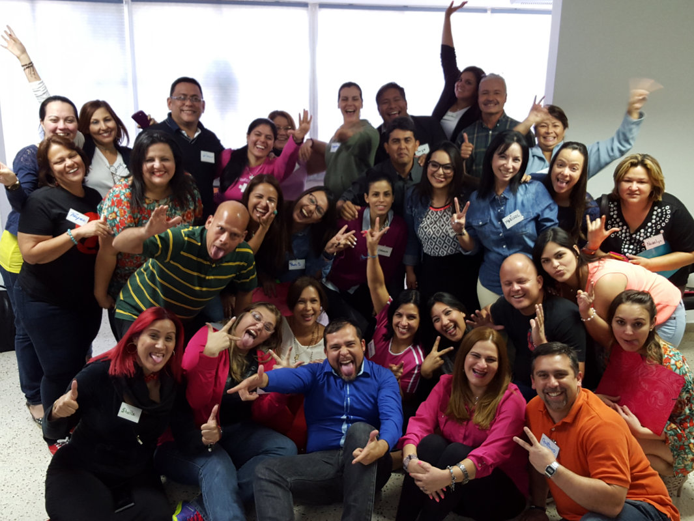

La conferencia que lo consolida en el mercado venezolano llega el en 2012 con el lanzamiento de su primer libro " El Triunfo del Alma " Como Superar el auto saboteo y vivir exitosamente.
Esa propuesta le abre las puertas y resuena no solo en Venezuela y Colombia sino que toca a Nicaragua, Mexico, Estados Unidos y Peru.
En este libro "El Triunfo de Alma" desde su vivencia entrega herramientas contundentes que permite encontrarnos con nosotros mismos e identificar nuestro saboteador. Prologo ded Rafael Coriat y Elba Escobar. Esta guia practica lleva dos ediciones totalmente vendidas entre Venezuela y Colombia y va rumbo a la 7ma edicion en el 2017.
Es uno de los motivadores mas convacados por los medios de comunicacion venezolanos, tocnado temas de crecimiento y evolucion personal desde la sencillez, frescura y profundidad que lo caracterizan
Es asesor personal y coach de importantes figuras de la vida publica y empresas en Venezuela, quienes los buscan como apoyo en le proceso de descubrir como superar diversos bloqueos subconsciente y como orientar sus metas y proposito de vida.

Se mantiene activo en las redes sociales a traves de sus cuentas de instagram, facebook y Twitter @humbertomontes por donde diariamente comparte reflexiones poderosas y en su blog
http://humbertomontes.blogspot.com/